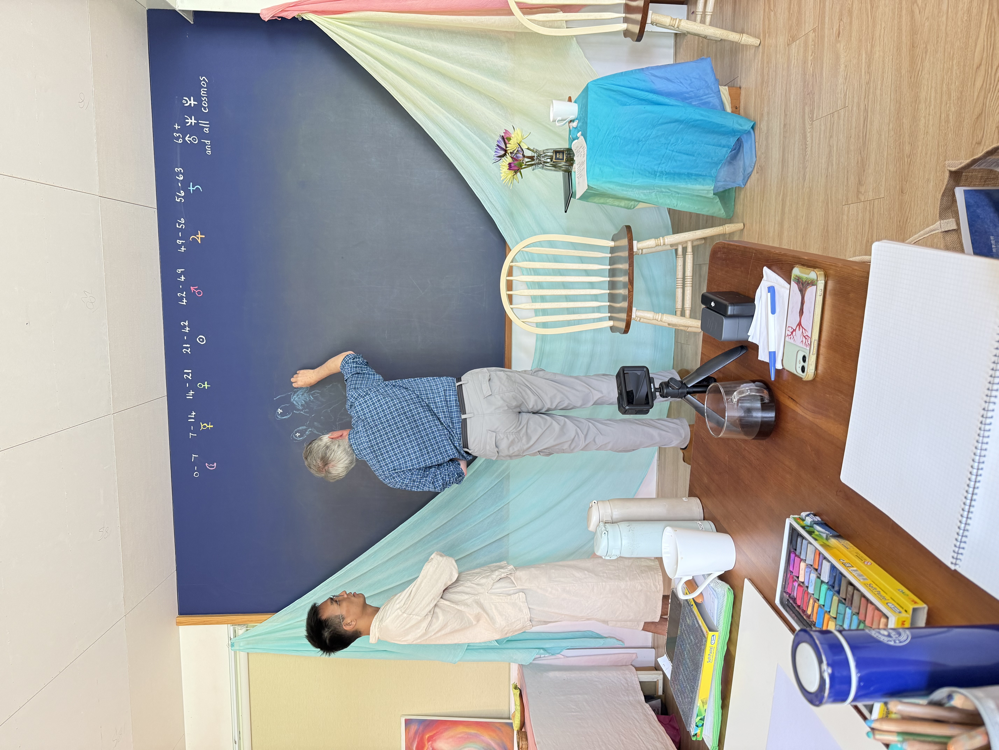
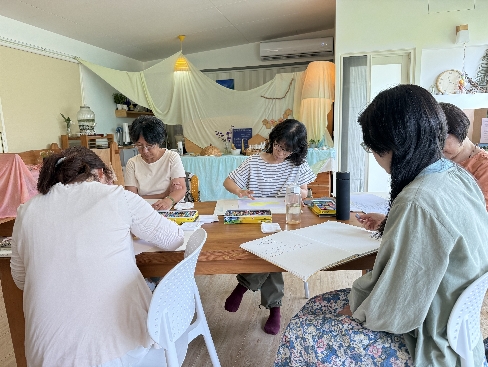
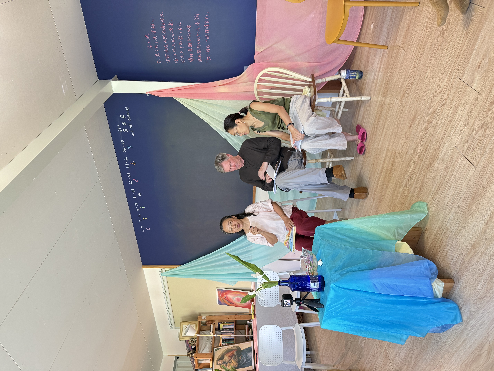

The stars are the expression of love in the cosmic ether … To see a star means to feel a caress that has been prompted by love … To gaze at the stars is to become aware of the love proceeding from divine spiritual beings.
— Rudolf Steiner, Karmic Relationships, Vol. 7, Lecture 2, June 1924
星辰是在宇宙乙太中愛的表達……看一顆星，意味著感覺到一種撫觸，這撫觸源自於愛……凝視星辰，則是去意識那源於神聖靈性存有之愛。
——魯道夫·史代納，業力關係，第七卷第二講，1924年6月8日
🌿 關於課程：在星空與生命史中「認識自己」
我們將展開一段旅程，體驗在生命各個不同階段的心魂道路。對現代人來說，這是一段探索千變萬化且充滿謎題和挑戰的世界之旅程。在科技日新月異、唯物主義盛行的時代，「認識自己」對現代人類來說是一個獨特的挑戰；然而，「認識自己」是一種持續的努力，它強烈地表明了我們人類不斷尋求更深層次理解的努力。
真正「認識自己」的旅程，首先，我們必須先向外探索，帶著興趣去探索世界的各個維度；甚至到達星星和行星的領域，在那裡，我們可以透過驚奇去體驗到一種令人驚豔的親密感，喚醒我們生命中的意義和目的。在這裡，我們必須開放心胸去工作，並伴隨我們的觀察，透過這種方式，我們才能在觀察世界時，真正喚醒自己。
反之亦然，透過向內在凝視，我們開始理解人類如何揭示外在世界的真實本質，甚至揭示自然界的基石。在內在生命中，我們也能感受到必須透過實踐，才能欣賞豐盛的社會關係以及和世界的相遇。當我們開始認識自己時，我們就能覺醒於世界。
以魯道夫·史代納（Rudolf Steiner）的人智學與星智學為基底，結合生命史的梳理、動人的星星故事，以及《治療教育讀書會》等核心文本，我們將一同在如戲劇般跌宕起伏的人生中，透過星智學的智慧找回內在的定錨與力量。
講師簡介
帶領您深入星智學與生命史的國際專業師資
Alan Thewless
出生於英國，2002年移居美國。將教育視為是一種療癒性的藝術而深入其中，並在近30年的時間裡，一直擔任華德福教師和特殊教育的老師。在美國完成人智學取向心理學（心智學）和音樂治療的學習。
30多年來，一直在研讀星智學，並定期在國際上就星智學和教育撰寫文章、並開設課程和舉辦講座。自2016年以來，每年編撰《聖夜日誌》，為聖誕節期的十二個夜晚提供沉思和紀錄的徑途。同時是一位里拉琴製琴師，並身兼莎士比亞信託委員會的專案檔案管理人，目前亦擔任人智學心理學協會的兼職教師。
適合這樣的你
探索宇宙觀
對人智學、星智學、生命史和華德福教育背後的宇宙觀有興趣的夥伴。
尋求內在支持
渴望在生活中尋找自然、溫柔、可持續之內在支持力量的你。
陪伴與助人者
陪伴孩子或從事助人工作、教育工作，希望拓展生命視野的同行者。
核心主題與文本脈絡
⭐ 星智學帶狀課程
探索星體運行、人類身心靈發展，以及生命各階段的心魂道路。
🌟 星星的故事
透過神話與星空敘事，喚醒心魂深處的記憶與理解。
📚 《治療教育讀書會》
深入宏觀的宇宙智慧，落實在微觀的陪伴與療癒之中。
報名與場地資訊
⭐ 上課地點
五芒星星親子共學園區大教室
宜蘭縣三星鄉安農九路 560 號
⭐ 費用與方案
收費方式：詳見報名表，各單堂／系列課程費用有所不同。
身分優惠：符合優惠身分者完成報名並繳費者享有身分優惠。
早鳥優惠：於規定日期前完成報名並繳費者享有早鳥優惠。
雙重優惠：同時符合優惠身分且於早鳥期限內繳費者，可享雙重疊加優惠！
⭐ 優惠身分
適用對象：
- 本協會會員
- 現任五芒星星親子共學家長
- 本協會主辦之治療教育讀書會成員
- 去年星智學宜蘭工作坊成員
💕 早鳥加優惠價：同時符合優惠身分且於早鳥期限內繳費者，可享雙重疊加優惠！
活動寫真
工作坊與讀書會點滴記錄



2026 年度課程日程與資訊
💡 貼心提醒：本課程約每年開設 1 至 2 次，確切時段依老師每年度抵台時間而定。
課程皆附有中文翻譯，並可提供課程錄影回看。
追蹤最新消息：當期開課資訊與詳細日程公布後，將同步開放線上報名。誠摯邀請關注我們的最新動態，以免錯過難得的相遇。
對課程內容有任何疑問，或想了解更多詳情？歡迎隨時與我們聯繫交流